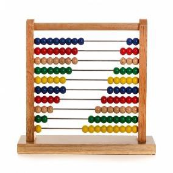

Computadora, es una máquina electrónica digital programable que ejecuta una serie de comandos para procesar los datos de entrada, obteniendo convenientemente información que posteriormente se envía a las unidades de salida.
Una computadora, está compuesta por numerosos y diversos circuitos integrados y varios elementos de apoyo, extensión y accesorios, que en conjunto pueden ejecutar tareas diversas con suma rapidez y bajo el control de un programa (software).
La constituyen dos partes esenciales, el hardware que es su estructura física (circuitos electrónicos, cables, gabinete, teclado, ratón, etc.) y el software, que es su parte intangible (programas, datos, información, documentación, etc).
| A través del tiempo | Eventos más trascendentales |
|---|---|
| Abaco (5,000 años atrás)  |
Primera Generación (1945-1956)
|
| Calculadora de Pascal (1642) |
Segunda Generación (1956-1963)
|
| Máquina de multiplicar de Leibniz (1694) |
Tercera Generación (1964-1971)
|
| Clases y Categorías de Computadoras | |
|---|---|
| Clases | Análoga |
| Digital | |
| De uso general | |
| De uso especial | |
| Categorías | Supercomputadoras |
| Mainframe | |
| Minicomputadoras | |
| Servidor | |
| Microcomputadoras | |